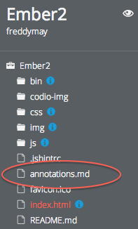

Adding tokens to source files
To add an annotation to any file, you need to insert a pair of tokens (opening and closing) into any file. You will typically insert it as a comment. If you only want to highlight the line following the token, then you do not need a closing tag.
You place your @annotation token above the start of the snippet as follows (this would be the syntax for Javascript, C, C++ etc. due to the //).
// @annotation:tour token-name
and on the line at the end of the code snippet
// @annotation:/tour token-name
Adding a non-tour annotation
You will often want to provide an annotation that
- gives the user contextual help (in Explore mode)
- can be referenced from an external page using a Codio widget to display a code snippet in that page
In this case, you use the snippet directive rather than tour.
// @annotation:snippet token-name
Writing annotation content
After you have added your source file token you add your annotation content to a file in the root of your application called annotations.md. If it is not there, just add it.

The annotations are written in Markdown format. Click here for an overview of markdown syntax.
Markdown is very easy to write, is portable and allows you to add plenty of richness. Here is a simple example that includes a header and a video.
@annotation:tour
#How about a video
The best way to get started is to watch a video of the demo **impress.js** presentation contained within this project. You can press the Preview button at the top left of the screen to see it in your browser or run the video below. Feel free to enlarge the window.
http://youtu.be/Aj5mFDihfkw?rel=0&showinfo=0
Tour items that do not show any code
You will often want to include some tour explanations that do not point to any code. In this case, you insert this in the annotations.md file without any matching source file token.
@annotation:tour
#Welcome to my tour
We are about to take a magical mystery tour of my code. Don't smoke anything too strong beforehand or it might blow your mind.
Annotating code that is not part of a tour
In some cases, though, you may want to reference a snippet that you do not want to be a part of a tour. In this case, you use the @annotation:snippet token.
<div id="bored" class="step slide" data-x="-1000" data-y="-1500">
<q>Aren't you just <b>bored</b> with all those slides-based presentations?</q>
</div>
the snippet directive means that a blue 'i' icon will appear in the code, which can be clicked on to display the annotation but this snippet will not appear within the tour.
Explore Mode
All snippets, whether tour or snippet are available in Explore mode.